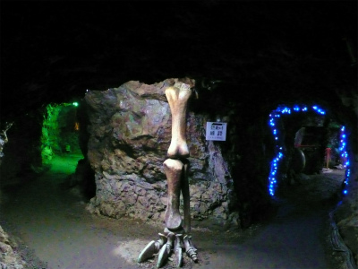

恐竜ランド地獄洞/和歌山県
和歌山の深〜い深〜い山中に地獄ありけり。
こんな感じの山の中を延々と進むのだ。
段々道が狭くなってくるのだ。結論として行き返りのこの道が一番地獄だったのだ。
途中途中に現れる幸せいっぱい夢いっぱいな感じの看板。ここは恐竜と地獄の２枚看板を持つレジャーランドなのである。
おや、恐竜と極楽でしたね。
てなわけでやっと到着。はー遠かった。
で、現れるのがこちら。
元々銅鉱山の坑道跡地を利用した観光施設である。
しかし観光施設としてはあまりにも交通の便がマニアックすぎるのが玉に瑕、である。
それではいざ入洞！
っと、その前にいくつかのお約束事を確認、確認。ヘルメット着用ですか。
この山から銅が採掘されていたのは江戸中期から昭和４０年頃まで。
閉山後、平成４年に恐竜ランドとしてオープンした。ちなみにここから少し離れた場所には恐竜館という博物館もある。
その後、平成19年に極楽洞が追加投入された。つまり国内最先端の地獄めぐり、という訳だ。
極楽洞オープンを知らせる看板。

「おもしろ」の部分が後から書かれているので近づいてみると以前は「霊界の」と書かれていたようだ。
霊界がおもしろに変わったあたりに色々な事情を感じるようなそうでもないような…
入り口に積んであるヘルメットを被って、改めていざ入洞！
まずはメインの恐竜ランドの方から。

洞窟のところどころに恐竜がいる。
洞窟内は案内板がないと迷子になってしまうほど複雑だ。
さらに坑道は立体的に入り組んでいて深い穴の底にこれから行くであろう太鼓橋の通路が見えたり、高低差を生かした間欠噴水があったり、吹き抜けのような深い穴に滝が落ちていったり、自然に出来たものではないにせよ神秘的な雰囲気に満ちていた。
お坊さんの石像が。これはこの鉱山を発見した海順という僧だ。
江戸時代にこのお坊さんがこの地で滝に打たれていたときに金を発見したのがそもそもの始まりなのだとか。
この辺は明治になるまで高野山の直轄の寺領だったため真言密教系のお坊さんが多かったのだろう。
ちなみに左に見える棕櫚の木はもちろん作り物です。
坑道はご覧のように枝分かれしたり下に降りていったり…
まさになのだ
坑道には所々大きなホールのような場所があり、恐竜がうごめいている。
恐竜は機械仕掛けで時々動く。エアコンプレッサー駆動なのだろうか動きが滑らかだ。
奥には鉱山にちなんで光る石の展示コーナーも。
怪しげな原始の宴が繰り広げられている。
途中、恐竜博士を気取るチビッ子が親に呆れられたのか、聞いてもいないのに俺に延々と説明してくれるのがウザかったです。
君ねえ…。聞いてもいない人にずーっと説明してると俺みたいな大人になっちゃうんだからね！
コホン…、前置きが長くなりました。
いよいよお待ちかねの地獄極楽めぐりである。
恐竜ランドの通路に突如現れる金棒。
ここが極楽洞への入り口である。
赤い門を潜るとそこは緩やかな下りスロープ。まるであの世へとゆっくりゆっくり降下していくようだ。
国内最新の地獄極楽巡りだけあって、様々なギミックが用意されている。
まずは「不思議おもしろミラー」（←大山のぶ代の声希望）
マジックミラーの前に立つとセンサーでミラーの向こう側の照明が点いて、自分の姿が鬼に早変わりする仕組み。
不思議でしょ？おもしろでしょ？ミラーでしょ？
先ほどのチビッ子が来たらお返しに輪廻の説明とか地獄の痛い責め苦ベスト100とか日本と中国の地獄の違いとか気を失うまでレクチャーしてやろうと思ってたのに、全然来る様子がない。
どうやら恐竜だけ見て帰っちゃったみたい…。
というわけで軽くジャブをかまされてから死後の世界への旅がはじまる。
パネルのイラストと文章で説明してある。この辺、飛び道具で茶化さずちゃんと説明している姿勢に好印象。
と思ったら…
でました！極楽洞ギミックその2！
3Dレンズって何？しかも日本初？絵が飛び出す？
↓これがその正体だ！
…3Dというか昔のお菓子のオマケとかによくついてたアレですよアレ！
大人の世界ではレンチキュラーと呼ぶらしい。
コレはかなり腰砕けました。でも使い方によっては面白い効果が得られるかもしれないな、とか思ってしまった。
仏像の光背とか大仏の着物の柄にどうでしょうかねえ。
無論、恐竜同様に地獄の仲間たちも機械仕掛けで動きますよー。
さすが国内最先端の立体地獄である。動きがスムーズだ。
それしか動かないのかー、とか言わないように。
それにしても光る鎖が味わい深いですね。
そしてこちらは閻魔大王。
こちらもセンサー感知式で地獄の説明が流れ、その後閻魔様の判定がライブで楽しめる「舌抜きじゃー、釜茹でじゃー！」とのたまう閻魔様…目が怖い…
閻魔様の周辺にいる鬼も怖い。
足元には判決を待つ人たちが。
そして地獄の責め苦ももちろん3D！
舌を挟んだり挟まなかったり。
このレンチキュラー式の地獄ではこちらが積極的に動かないと地獄の責め苦が開始されない。
苦しい様子を見るのにこっちが一生懸命動かなきゃいけないなんて…もちろん私は反復横とび何十往復もやってハーハーでしたが何か？
そして地獄めぐりのメインディッシュ、釜茹での刑。
コレは私がアクティブに動かなくてもセンサー仕掛けで動いてくれました。
徐々に全身を現す恐ろしい鬼！
「馬鹿め〜、もう遅いわ〜、苦しめ〜、苦しむのじゃあ〜！」と言った後、何をするのか！と、思ったら…
沈んでいっちゃいました…
それでも釜茹での刑は相当厳しいようでホラ、右の女性なんか頭の上の方が取れちゃってますから。
そんなこんなで楽しい地獄巡りもフィナーレ。最後に再び不思議変身ミラー。
あの世での行き先がこのミラーで判るという。
ミラーの前に立つと
もちろん菩薩が現れて無事極楽行き、と相成る。
で、その天道癒しの空間。
謎の装飾センスに彩られたゲートを潜ると現れるのは阿弥陀如来が納まる祭壇。
その光背が東南アジアの電飾光背よろしくビカビカ点滅するのだ。
そして流れる大団円的ナレーション。
後ろにあるのは神棚じゃない？
そんなこんなで案の定、極楽はあっさりでした。
これにて恐竜ランド＆極楽洞は終了。
それにしても恐竜ランドの観光客誘致の梃入れで地獄極楽巡りつくるという意表を突きまくりの経営戦略には驚くばかりである。
行き難い所ではあるが日本の立体地獄シーンを語る上では絶対に外せない場所である。
地獄マニア必見のスポットですぞ。
坑道だけにあの世の雰囲気はかなりありますぞ。
プテラノドン型あずまや。食われそうでおちおち休んでもいられません…
参照；恐竜ランド＆極楽洞の公式サイト
2009.11.
珍寺大道場 HOME